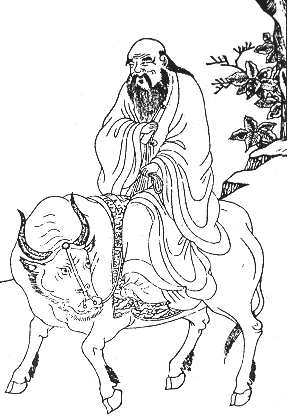

|
Taoism  Lao Tsu was born in China in 601 B.C. He held a number of public offices during his long life and was the curator of the royal library in Loyang. As an old man he retired from government service and traveled on buffalo-back to the region of the Gobi desert. Because of a boundary warden's plea, the sage paused long enough to inscribe a short record of his teachings. Leaving this, he resumed his journey to an unknown destination and was seen no more. His small book, the Tao Te Ching, is one of the world's great religious classics. Within a matter of centuries, Lao Tsu was worshipped as a god and his masterpiece was engraved on stone at the Capital of every Chinese state. Will it be possible to describe the way of the Tao in this book? Though thousands of volumes have been written about it, Lao Tsu himself states that "The Tao that can be put into words is not the eternal Tao." We can only try to outline and summarize: There is a perfect balance that lies within each individual, and following this balance requires neither cunning nor striving. A story is told of King Wen's wonderful cook who has used the same knife to cut meat for over 20 years without every having to sharpen his knife, because he spontaneously moved his blade through the meat precisely and without effort or hacking. This expression of the Tao as effortless attainment is was referred to as wu-wei. Wu-wei has been translated to mean noninterference, non-doing, action without deeds, or actionless activity. The Taoists did not mean that one should never act, but that one should be fluid and changing so as to always adjust one's self to circumstances. This is why it is said: What is of all things most yielding (water)Like the yogis in India, the Taoists developed exercises enabling them to gain conscious control over internal states. Disciplined breathing constituted one basis of these exercises. Meditation was also used in order to separate the spirit from the body and travel independently of it as well as to maintain an eternal calm in the midst of changing conditions. Qi energy was said to be the product of
the two great forces of yin and yang which run through the entire universe.
All phenomenal manifestation exists as a tension between these two principles,
which operate on all levels.
References . Eugene Taylor, "Asian Interpretations: Transcending the Stream of Consciousness." In Kenneth S. Pope and Jerome L. Singer (eds.), The Stream of Consciousness. New York: Plenum Press, 1978. . Arthur Waley, The Way and Its Power. New York: Grove Press, 1958, p. 197. . The Secret of the Golden Flower, trans. by Richard Wilhelm. New York: Harcourt, Brace and World, 1962. |